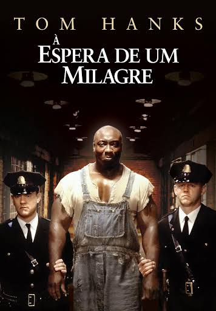
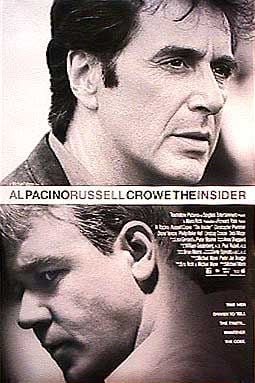
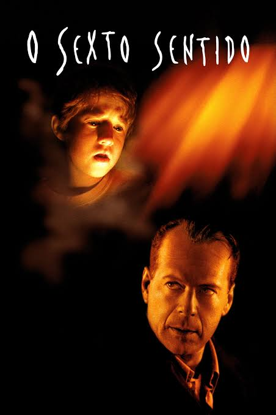

O objetivo da premiação do Oscar de 2000 (a 72ª edição) foi reconhecer e homenagear a excelência artística e técnica das produções cinematográficas lançadas no ano de 1999.
A 72ª cerimônia de entrega do Oscar ou Oscar 2000 (no original: 72nd Academy Awards), apresentada pela Academia de Artes e Ciências Cinematográficas, premiou os melhores técnicos, atores e filmes de 1999. Ela ocorreu no dia 26 de março de 2000 no Shrine Auditorium, em Los Angeles, Califórnia. Durante a cerimônia, a academia entregou o prêmio Oscar em 23 categorias. A cerimônia foi televisionada nos Estados Unidos pela ABC e teve Billy Crystal como apresentador pela sétima vez. Três semanas antes em 4 de março, Salma Hayek apresentou o Oscar por Realizações Técnicas.
American Beauty venceu cinco prêmios, incluindo Melhor Filme. Outros vencedores incluem The Matrix com quatro, The Cider House Rules e Topsy-Turvy com dois, e Boys Don't Cry, Interrupted, King Gimp, My Mother Dreams the Satan's Disciples in New York, One Day in September, Le Violon Rouge, Sleepy Hollow, Tarzan e Todo Sobre Mi Madre com um prêmio cada. A transmissão da cerimônia teve uma audiência de 47 milhões de telespectadores na América do Norte.
Os indicados ao Oscar de Melhor Filme na 72ª edição da premiação (realizada em março de 2000, premiando os filmes lançados em 1999) foram:
1935, no corredor da morte de uma prisão sulista. Paul Edgecomb (Tom Hanks) é o chefe de guarda da prisão, que temJohn Coffey (Michael Clarke Duncan) como um de seus prisioneiros. Aos poucos, desenvolve-se entre eles uma relação incomum, baseada na descoberta de que o prisioneiro possui um dom mágico que é, ao mesmo tempo, misterioso e milagroso.

A Espera de um MilagreEm 1994, ex-executivo da indústria do tabaco deu entrevista bombástica ao programa jornalístico "60 Minutos", da rede americana CBS. Dizia que os manda-chuvas da empresa em que trabalhou não apenas sabiam da capacidade viciadora da nicotina como também aplicavam aditivos químicos ao cigarro, para acenturar esta característica. Na hora H, porém, a CBS recuou e não transmitiu a entrevista, alegando que as consequências jurídicas poderiam ser fatais. Baseando-se nesta história real, O Informante narra a trajetória do ex-vice-presidente da Brown & Williamson Jeffrey Wigand (Russell Crowe) e do produtor Lowell Bergman (Al Pacino), que o convenceu a falar em público.

O Informante (The Insider)Baseado no best-seller de John Irving, a história de Homer Wells (Tobey Maguire), um garoto sem parentes que passa a ter como mentor um médico de um orfanato, Dr. Wilbur Larch (Michael Caine). Larch ensina a Homer tudo o que sabe sobre medicina e a diferença entre certo e , mas nunca o ensinou as regras da vida propriamente ditas. Quando Homer sai para descobrir o mundo, ele mais excitante do que jamais imaginara, especialmente quando se apaixona pela primeira vez. Entretanto, quando forçado a tomar decisões que irão influir para sempre em sua vida, percebe que no final das contas não pode fugir de seu passado.
Regras da Vida (The Cider House Rules)O psicólogo infantil Malcolm Crowe (Bruce Willis) abraça com dedicação o caso de Cole Sear (Haley Joel Osment). O garoto, de 8 anos, tem dificuldades de entrosamento no colégio e vive paralisado de medo. Malcolm, por sua vez, busca se recuperar de um trauma sofrido anos antes, quando um de seus pacientes se suicidou na sua frente.

O Sexto Sentido (The Sixth Sense)